स्कन्ध 11 · अध्याय 16
श्लोक १
उद्धव उवाच–
त्वं ब्रह्म परमं साक्षादनाद्यन्तमपावृतम् ।
सर्वेषामपि भावानां प्राणः स्थित्यप्ययोद्भवः।। १ ।।
त्वं ब्रह्म परमं साक्षादनाद्यन्तमपावृतम् ।
सर्वेषामपि भावानां प्राणः स्थित्यप्ययोद्भवः।। १ ।।
श्लोक २
उच्चावचेषु भूतेषु दुर्ज्ञेयमकृतात्मभिः ।
उपासते त्वां भगवन् याथातथ्येन ब्राह्मणाः ।। २ ।।
उपासते त्वां भगवन् याथातथ्येन ब्राह्मणाः ।। २ ।।
श्लोक ३
येषु येषु च भावेषु यथा त्वां परमर्षयः ।
उपासीनाः प्रपद्यन्ते संसिद्धिं तद् वदस्व मे ।। ३ ।।
उपासीनाः प्रपद्यन्ते संसिद्धिं तद् वदस्व मे ।। ३ ।।
श्लोक ४
गूढश्चरसि भूतेषु भूतात्मा भूतभावनः ।
न त्वां पश्यन्ति भूतानि पश्यन्तं मोहितानि ते ।। ४ ।।
न त्वां पश्यन्ति भूतानि पश्यन्तं मोहितानि ते ।। ४ ।।
श्लोक ५
याः काश्च भूमौ दिवि वै रसायां विभूतयो दिक्षु महाविभूतेः ।
ता मह्यमाख्याह्यनुभावितास्ते नमामि ते तीर्थपदाङ्घ्रिपद्मम्।। ५ ।।
ता मह्यमाख्याह्यनुभावितास्ते नमामि ते तीर्थपदाङ्घ्रिपद्मम्।। ५ ।।
श्लोक ६
श्रीभगवानुवाच–
एवमेतदहं पृष्टः प्रश्नं प्रश्नविदां वर ।
युयुत्सुना विशसने सपत्नैरर्जुनेन वै ।। ६ ।।
एवमेतदहं पृष्टः प्रश्नं प्रश्नविदां वर ।
युयुत्सुना विशसने सपत्नैरर्जुनेन वै ।। ६ ।।
श्लोक ७
ज्ञात्वा ज्ञातिवधं गर्ह्यमधर्म्यं राज्यहैतुकम् ।
ततो निवृत्तो हन्ताऽहं हतोऽयमिति लौकिकः ।। ७ ।।
ततो निवृत्तो हन्ताऽहं हतोऽयमिति लौकिकः ।। ७ ।।
श्लोक ८
स तदा पुरुषव्याघ्रो युक्त्या मे प्रतिबोधितः ।
अभ्यभाषत मामेवं यथा त्वं रणमूर्धनि ।। ८ ।।
अभ्यभाषत मामेवं यथा त्वं रणमूर्धनि ।। ८ ।।
श्लोक ९
अहमात्मोद्धवामीषां भूतानां सुहृदीश्वरः ।
अहं सर्वाणि भूतानि तेषां स्थित्युद्भवाप्ययः।। ९ ।।
अहं सर्वाणि भूतानि तेषां स्थित्युद्भवाप्ययः।। ९ ।।
भागवततात्पर्यनिर्णय
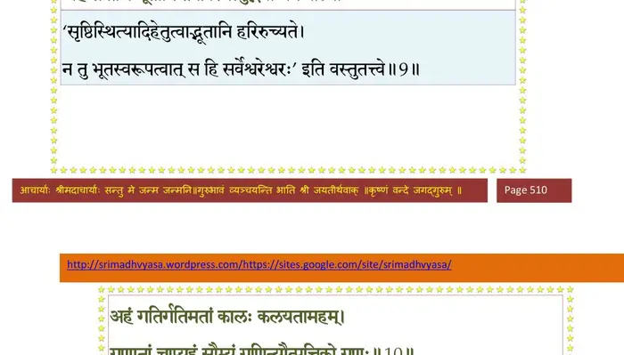
श्लोक १०
अहं गतिर्गतिमतां कालः कलयतामहम् ।
गुणानामप्यहं सौम्यं गुणिन्यौत्पत्तिको गुणः।। १० ।।
गुणानामप्यहं सौम्यं गुणिन्यौत्पत्तिको गुणः।। १० ।।
भागवततात्पर्यनिर्णय
श्लोक ११
गुणिनामप्यहं सूत्रं महतां च महानहम् ।
सूक्ष्माणामप्यहं जीवो दुर्जयानामहं मनः ।। ११ ।।
सूक्ष्माणामप्यहं जीवो दुर्जयानामहं मनः ।। ११ ।।
भागवततात्पर्यनिर्णय
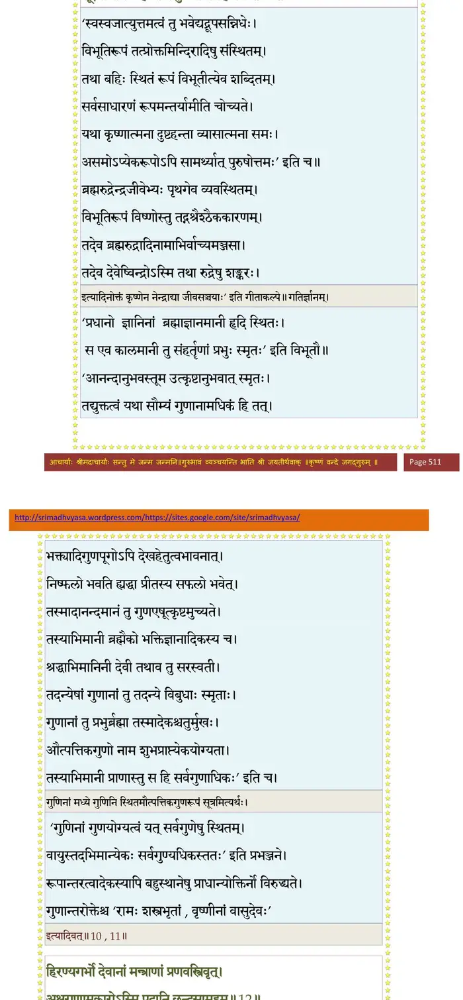
श्लोक १२
हिरण्यगर्भो देवानां मन्त्राणां प्रणवस्त्रिवृत् ।
अक्षराणामकारोऽस्मि पदानि च्छन्दसामहम् ।। १२ ।।
अक्षराणामकारोऽस्मि पदानि च्छन्दसामहम् ।। १२ ।।
भागवततात्पर्यनिर्णय
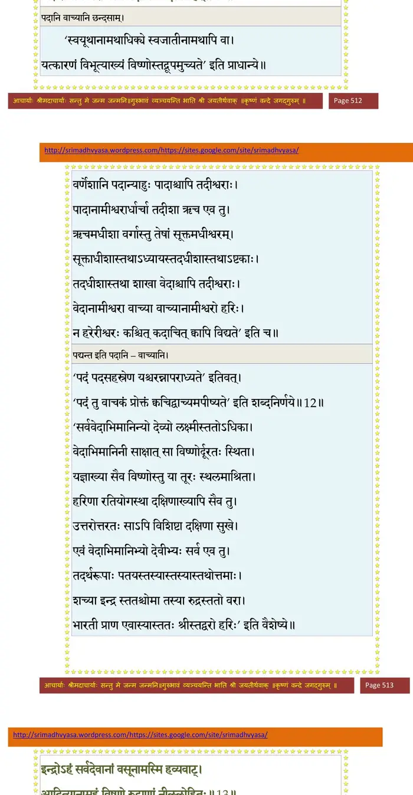
श्लोक १३
इन्द्रोऽहं सर्वदेवानां वसूनामस्मि हव्यवाट् ।
आदित्यानामहं विष्णू रुद्राणां नीललोहितः ।। १३ ।।
आदित्यानामहं विष्णू रुद्राणां नीललोहितः ।। १३ ।।
भागवततात्पर्यनिर्णय
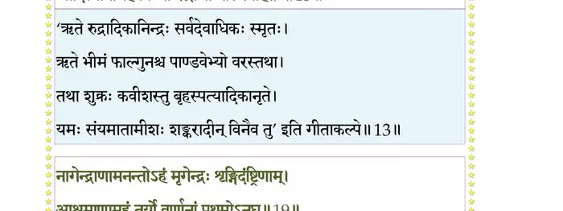
श्लोक १४
ब्रह्मर्षीणां भृगुरहं राजर्षीणामहं मनुः ।
देवर्षीणां नारदोऽहं हविर्धान्यस्मि धेनुषु ।। १४ ।।
देवर्षीणां नारदोऽहं हविर्धान्यस्मि धेनुषु ।। १४ ।।
श्लोक १५
सिद्धेश्वराणां कपिलः सुपर्णोऽहं पतत्रिणाम् ।
प्रजापतीनां दक्षोऽहं पितॄणामहमर्यमा ।। १५ ।।
प्रजापतीनां दक्षोऽहं पितॄणामहमर्यमा ।। १५ ।।
श्लोक १६
मां (त्वं) विद्ध्युद्धव दैत्यानां प्रह्लादमसुरेश्वरम् ।
सोमं नक्षत्रौषधीनां धनेशं यक्षरक्षसाम् ।। १६ ।।
सोमं नक्षत्रौषधीनां धनेशं यक्षरक्षसाम् ।। १६ ।।
श्लोक १७
ऐरावतं गजेन्द्राणां यादसां वरुणं प्रभुम् ।
तपतां द्युमतां सूर्यं मनुष्याणां च भूपतिम् ।। १७ ।।
तपतां द्युमतां सूर्यं मनुष्याणां च भूपतिम् ।। १७ ।।
श्लोक १८
उच्चैःश्रवास्तुरङ्गाणां धातूनामस्मि काञ्चनम् ।
यमः संयमतां चाहं सर्पाणामस्मि वासुकिः ।। १८ ।।
यमः संयमतां चाहं सर्पाणामस्मि वासुकिः ।। १८ ।।
श्लोक १९
नागेन्द्राणामनन्तोऽहं मृगेन्द्रः शृङ्गिदंष्ट्रिणाम् ।
आश्रमाणां तुरीयोऽहं
(आश्रमाणामहं तुर्यो) वर्णानां प्रथमोऽनघ ।। १९ ।।
आश्रमाणां तुरीयोऽहं
(आश्रमाणामहं तुर्यो) वर्णानां प्रथमोऽनघ ।। १९ ।।
भागवततात्पर्यनिर्णय
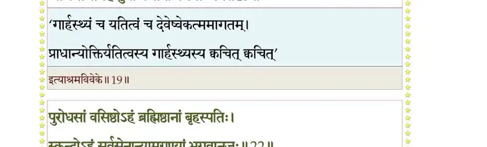
श्लोक २०
तीर्थानां स्रोतसां गङ्गा समुद्रः सरसामहम् ।
आयुधानां धनुरहं त्रिपुरघ्नो धनुष्मताम् ।। २० ।।
आयुधानां धनुरहं त्रिपुरघ्नो धनुष्मताम् ।। २० ।।
श्लोक २१
गिरीणामस्म्यहं मेरुर्गहनानां हिमालयः ।
वनस्पतीनामश्वत्थ ओषधीनामहं यवः ।। २१ ।।
वनस्पतीनामश्वत्थ ओषधीनामहं यवः ।। २१ ।।
श्लोक २२
पुरोधसां वसिष्ठोऽहं ब्रह्मिष्ठानां बृहस्पतिः ।
स्कन्दोऽहं सर्वसेनान्यामग्रण्यां भगवानजः ।। २२ ।।
स्कन्दोऽहं सर्वसेनान्यामग्रण्यां भगवानजः ।। २२ ।।
भागवततात्पर्यनिर्णय
श्लोक २३
यज्ञानां ब्रह्मयज्ञोऽहं व्रतानामविहिंसनम् ।
वाय्वग्न्यर्काम्बुवागात्मा शुचीनामप्यहं शुचिः ।। २३ ।।
वाय्वग्न्यर्काम्बुवागात्मा शुचीनामप्यहं शुचिः ।। २३ ।।
श्लोक २४
योगानामात्मसंरोधो मन्त्रोऽस्मि विजिगीषताम् ।
आन्वीक्षिकी कौशलानां विकल्पः ख्यातिवादिनाम्।। २४ ।।
आन्वीक्षिकी कौशलानां विकल्पः ख्यातिवादिनाम्।। २४ ।।
भागवततात्पर्यनिर्णय
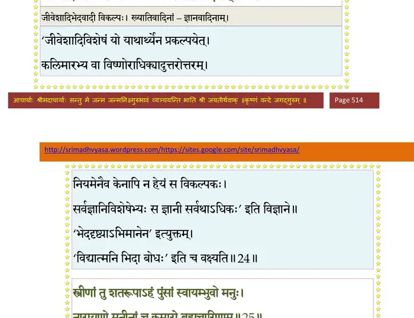
श्लोक २५
स्त्रीणां तु शतरूपाऽहं पुंसां स्वायम्भुवो मनुः ।
नारायणो मुनीनां च कुमारो ब्रह्मचारिणाम्।। २५ ।।
नारायणो मुनीनां च कुमारो ब्रह्मचारिणाम्।। २५ ।।
भागवततात्पर्यनिर्णय
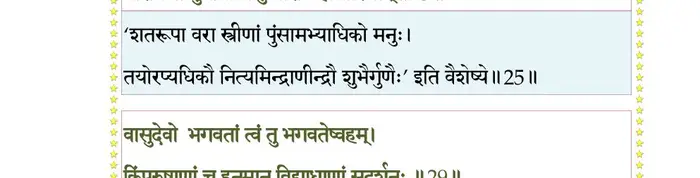
श्लोक २६
धर्माणामस्मि सन्त्यागः (सन्न्यासः) क्षेमाणामबहिर्मतिः ।
गुह्यानां सततं मौनं मिथुनानां पुमानहम् ।। २६ ।।
गुह्यानां सततं मौनं मिथुनानां पुमानहम् ।। २६ ।।
श्लोक २७
संवत्सरोऽस्म्यनिमिषामृतूनां मधुमाधवौ ।
मासानां मार्गशीर्षोऽहं नक्षत्राणां तथाऽभिजित्।। २७ ।।
मासानां मार्गशीर्षोऽहं नक्षत्राणां तथाऽभिजित्।। २७ ।।
श्लोक २८
अहं युगानां च कृतं धीराणां देवलोऽसितः ।
द्वैपायनोऽस्मि व्यासानां कवीनां काव्य आत्मवान्।। २८।।
द्वैपायनोऽस्मि व्यासानां कवीनां काव्य आत्मवान्।। २८।।
श्लोक २९
वासुदेवो भगवतां त्वं तु भागवतेष्वहम् ।
किम्पुरुषाणां च हनूमान् विद्याध्राणां सुदर्शनः।। २९ ।।
किम्पुरुषाणां च हनूमान् विद्याध्राणां सुदर्शनः।। २९ ।।
भागवततात्पर्यनिर्णय
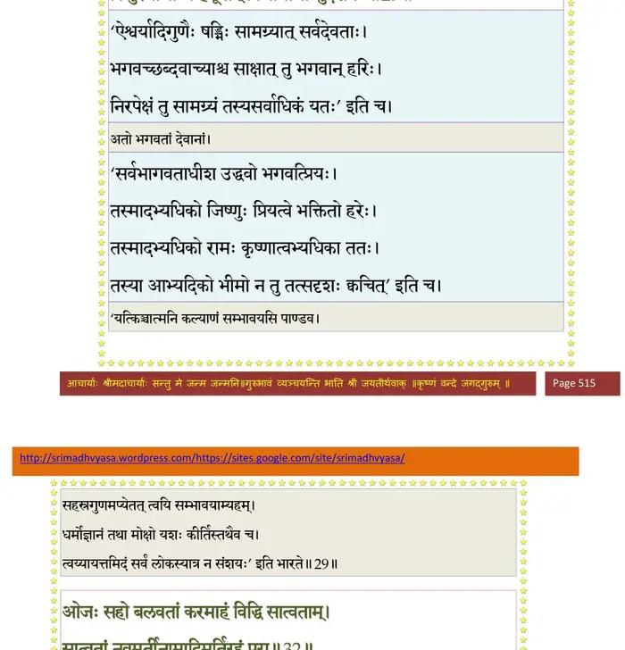
श्लोक ३०
रत्नानां पद्मरागोऽस्मि पद्मकोशस्तु पेशसाम् ।
कुशोऽस्मि दर्भजातीनां गव्यमाज्यं (गवामाज्यं) हविष्वहम् ।। ३० ।।
कुशोऽस्मि दर्भजातीनां गव्यमाज्यं (गवामाज्यं) हविष्वहम् ।। ३० ।।
श्लोक ३१
व्यवसायिनामहं लक्ष्मीः कितवानां छलग्रहः ।
तितिक्षाऽस्मि तितिक्षूणां सत्वं सत्ववतामहम्।। ३१ ।।
तितिक्षाऽस्मि तितिक्षूणां सत्वं सत्ववतामहम्।। ३१ ।।
श्लोक ३२
ओजः सहोबलवतां कर्माहं विद्धि सात्वताम् ।
सात्वतां नवमूर्तीनामादिमूर्तिरहं पुरा।। ३२ ।।
सात्वतां नवमूर्तीनामादिमूर्तिरहं पुरा।। ३२ ।।
भागवततात्पर्यनिर्णय
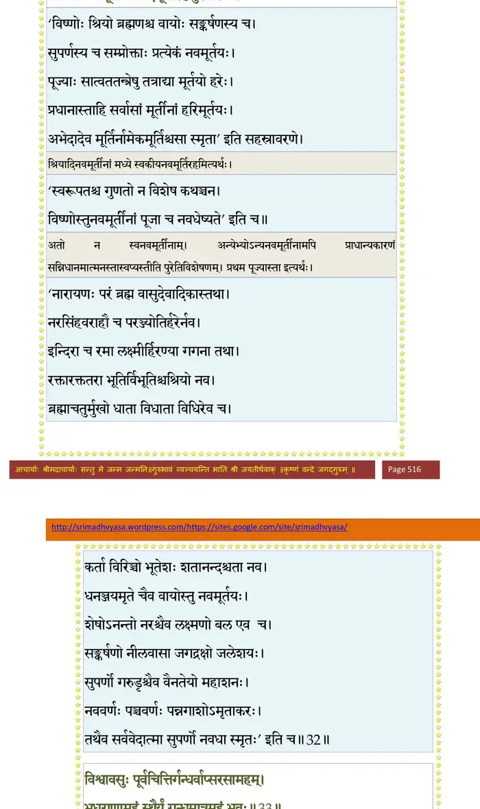
श्लोक ३३
विश्वावसुः पूर्वचित्तिर्गन्धर्वाप्सरसामहम् ।
भूधराणामहं स्थैर्यं गन्धमात्रमहं भुवः।। ३३ ।।
भूधराणामहं स्थैर्यं गन्धमात्रमहं भुवः।। ३३ ।।
भागवततात्पर्यनिर्णय
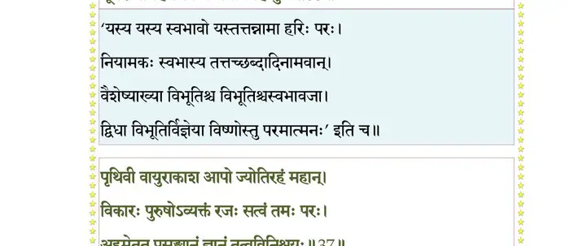
श्लोक ३४
अपां रसश्च परमस्तेजिष्ठानां विभावसुः ।
प्रभा सूर्येन्दुताराणां शब्दोऽहं नभसः परः।। ३४ ।।
प्रभा सूर्येन्दुताराणां शब्दोऽहं नभसः परः।। ३४ ।।
श्लोक ३५
ब्रह्मण्यानां बलिरहं वीराणामहमर्जुनः ।
भूतानां स्थितिरुत्पत्तिरहं वै प्रतिसङ्क्रमः।। ३५ ।।
भूतानां स्थितिरुत्पत्तिरहं वै प्रतिसङ्क्रमः।। ३५ ।।
श्लोक ३६
गत्युक्त्युत्सर्गोपादानमानन्दस्पर्शलक्षणम् ।
आस्वादश्रुत्यवघ्राणमहं सर्वेन्द्रियेन्द्रियम् ।। ३६ ।।
आस्वादश्रुत्यवघ्राणमहं सर्वेन्द्रियेन्द्रियम् ।। ३६ ।।
श्लोक ३७
पृथिवी वायुराकाश आपो ज्योतिरहं महान् ।
विकारः पुरुषोऽव्यक्तं रजः सत्वं तमः परः ।
अहमेतत्प्रसङ्ख्यानं ज्ञानं तत्वविनिश्चयः।। ३७ ।।
विकारः पुरुषोऽव्यक्तं रजः सत्वं तमः परः ।
अहमेतत्प्रसङ्ख्यानं ज्ञानं तत्वविनिश्चयः।। ३७ ।।
भागवततात्पर्यनिर्णय
श्लोक ३८
मयेश्वरेण जीवेन गुणेन गुणिना विना ।
सर्वात्मनापि सर्वेण न भावो विद्यते क्वचित्।। ३८ ।।
सर्वात्मनापि सर्वेण न भावो विद्यते क्वचित्।। ३८ ।।
भागवततात्पर्यनिर्णय
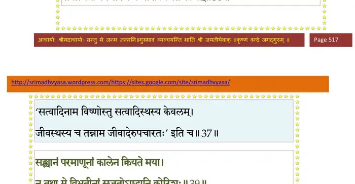
श्लोक ३९
सङ्ख्यानं परमाणूनां कालेन क्रियते मया ।
न तथा मे विभूतीनां सृजतोऽण्डानि कोटिशः।। ३९ ।।
न तथा मे विभूतीनां सृजतोऽण्डानि कोटिशः।। ३९ ।।
भागवततात्पर्यनिर्णय
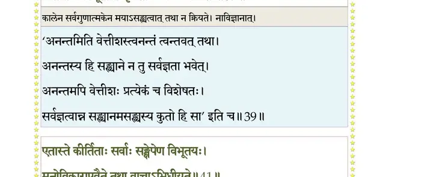
श्लोक ४०
तेजः श्रीः कान्ति(कीर्ति)रैश्वर्यं ह्रीस्त्यागः सौभगं भगः ।
वीर्यं तितिक्षा विज्ञानं यत्र यत्र स मेंऽशकः।। ४० ।।
वीर्यं तितिक्षा विज्ञानं यत्र यत्र स मेंऽशकः।। ४० ।।
श्लोक ४१
एतास्ते कीर्तिताः सर्वाः सङ्क्षेपेण विभूतयः ।
मनोविकारा एवैते तथा वाचाऽभिधीयते ।। ४१ ।।
मनोविकारा एवैते तथा वाचाऽभिधीयते ।। ४१ ।।
भागवततात्पर्यनिर्णय
श्लोक ४२
वाचं यच्छ मनो यच्छ प्राणं यच्छेन्द्रियाणि च ।
आत्मानमात्मना यच्छ न भूयः कल्प्यसेऽध्वने।। ४२ ।।
आत्मानमात्मना यच्छ न भूयः कल्प्यसेऽध्वने।। ४२ ।।
भागवततात्पर्यनिर्णय
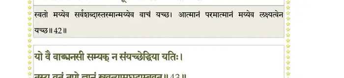
श्लोक ४३
यो वै वाङ्मनसी सम्यङ् न संयच्छेद् धिया यतिः ।
तस्य व्रतं तपो ज्ञानं स्रवत्यामघटाम्बुवत्।। ४३ ।।
तस्य व्रतं तपो ज्ञानं स्रवत्यामघटाम्बुवत्।। ४३ ।।
भागवततात्पर्यनिर्णय
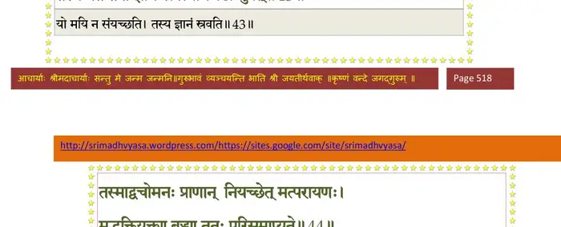
श्लोक ४४
तस्माद् वचोमनःप्राणान् नियच्छेन्मत्परायणः ।
मद्भक्तियुक्तया बुद्ध्या ततः परिसमाप्यते ।। ४४ ।।
मद्भक्तियुक्तया बुद्ध्या ततः परिसमाप्यते ।। ४४ ।।
भागवततात्पर्यनिर्णय
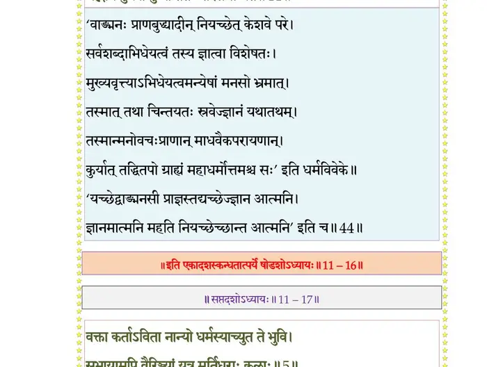
।। इति श्रीमद्भागवते एकादशस्कन्धे षोडशोऽध्यायः ।।